ฉันได้มีโอกาสเข้าร่วมกิจกรรมต่างๆ ที่จัดโดยมหาวิทยาลัยธุรกิจบัณฑิต ซึ่งล้วนเป็นกิจกรรมที่มีเป้าหมายเพื่อส่งเสริมความรู้และพัฒนาทักษะในด้านต่างๆ การเข้าร่วมกิจกรรมเหล่านี้ช่วยเปิดโอกาสให้ฉันได้เรียนรู้สิ่งใหม่ๆ ได้พัฒนาความสามารถทั้งในด้านวิชาการและการปฏิบัติจริง
นอกจากนี้ กิจกรรมยังเป็นพื้นที่ที่ทำให้ฉันได้พบปะเพื่อนร่วมงานใหม่ๆ และเรียนรู้การทำงานร่วมกันอย่างมีประสิทธิภาพ ประสบการณ์จากการเข้าร่วมกิจกรรมเหล่านี้ไม่เพียงเพิ่มพูนความรู้เท่านั้น แต่ยังสร้างแรงบันดาลใจให้ฉันพร้อมพัฒนาตนเองและต่อยอดทักษะในอนาคตได้อย่างต่อเนื่อง
ฉันมีโอกาสเข้าร่วมโครงการสัมมนาผู้นำนักศึกษา ประจำปีการศึกษา 2566 ซึ่งเป็นกิจกรรมที่มุ่งเน้นการเสริมสร้างความสัมพันธ์อันดีระหว่างนักศึกษา รวมถึงการสร้างความเข้าใจในนโยบาย หลักการ และแนวปฏิบัติที่สำคัญของการเป็นผู้นำ
ระหว่างการเข้าร่วมโครงการ ฉันได้เรียนรู้บทบาทและหน้าที่ของการเป็นผู้นำ การทำงานร่วมกันในทีม การแก้ปัญหา และการพัฒนาทักษะการสื่อสารอย่างมีประสิทธิภาพ กิจกรรมนี้ช่วยส่งเสริมให้ฉันมีความพร้อมที่จะนำทักษะเหล่านี้ไปปรับใช้ในชีวิตประจำวันและการทำงานในอนาคตอย่างมั่นใจ
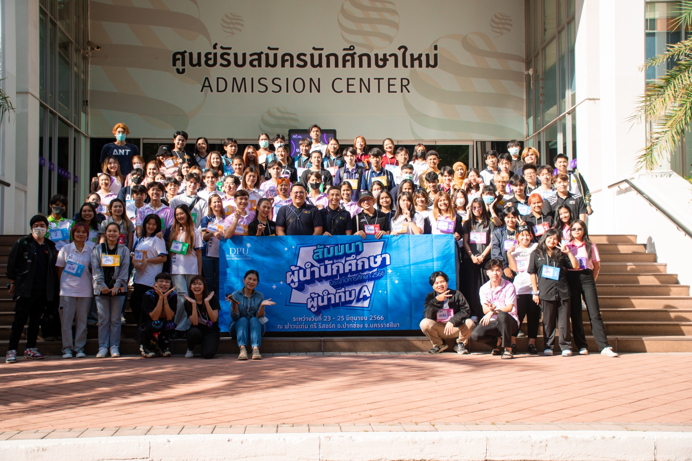ฉันได้รับโอกาสเข้าร่วม WORKSHOP หัวข้อ Time and Travel: การเดินทางผ่านเวลาสำหรับนักวาดภาพประกอบมืออาชีพในดิจิทัลอาร์ต ซึ่งเป็นกิจกรรมที่มุ่งเน้นการพัฒนาทักษะและความรู้สำหรับนักวาดภาพในสายงานดิจิทัล
ในกิจกรรมนี้ ฉันได้เรียนรู้เกี่ยวกับแนวทางการสร้างตัวตนและการพัฒนาผลงานเพื่อให้เป็นที่รู้จักในโลกออนไลน์ผ่าน Professional Illustrators, การจัดการ Online Art Portfolio, และ Artwork Marketing รวมถึงการได้รับคำแนะนำจากนักวาดมืออาชีพเกี่ยวกับประสบการณ์และการเตรียมตัวสำหรับการเข้าสู่อาชีพนี้ นอกจากนี้ ยังมีการแลกเปลี่ยนความรู้เกี่ยวกับบทบาทและความรับผิดชอบในตำแหน่งสำคัญ เช่น Art Director และ Lead Artist
ฉันยังได้รับคำแนะนำเชิงลึกเกี่ยวกับเทคนิคการจัดทำ Portfolio ที่เหมาะสมสำหรับสายงาน Digital Art ซึ่งช่วยให้ฉันมีมุมมองที่กว้างขึ้น และสามารถนำความรู้ที่ได้รับมาปรับใช้ในการพัฒนาตนเองได้อย่างมีประสิทธิภาพ
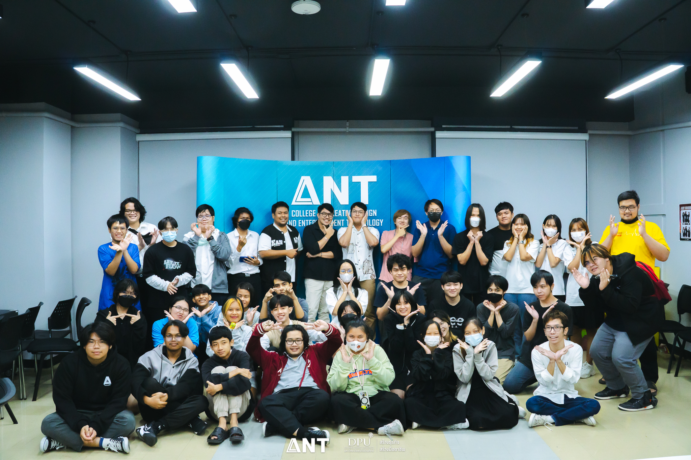ฉันมีโอกาสเข้าร่วม Mobile Phone Case Design by Procreate Workshop ซึ่งเป็นกิจกรรมที่เปิดโอกาสให้ผู้เข้าร่วมได้ออกแบบเคสโทรศัพท์ในสไตล์ของตนเองผ่านโปรแกรม Procreate
ในเวิร์กชอปนี้ ฉันได้เรียนรู้การใช้เครื่องมือและเทคนิคต่างๆ ในโปรแกรม Procreate เพื่อสร้างสรรค์ผลงานออกแบบที่สะท้อนตัวตนและความคิดสร้างสรรค์ นอกจากนี้ ยังได้รับคำแนะนำจากผู้เชี่ยวชาญเกี่ยวกับกระบวนการออกแบบและการสร้างผลงานที่เหมาะสมสำหรับการใช้งานจริง
ประสบการณ์ครั้งนี้ช่วยเสริมสร้างทักษะด้านการออกแบบดิจิทัล และเป็นแรงบันดาลใจสำคัญที่ทำให้ฉันสนุกกับการทดลองแนวคิดใหม่ ๆ พร้อมพัฒนาผลงานให้ดียิ่งขึ้นในอนาคต
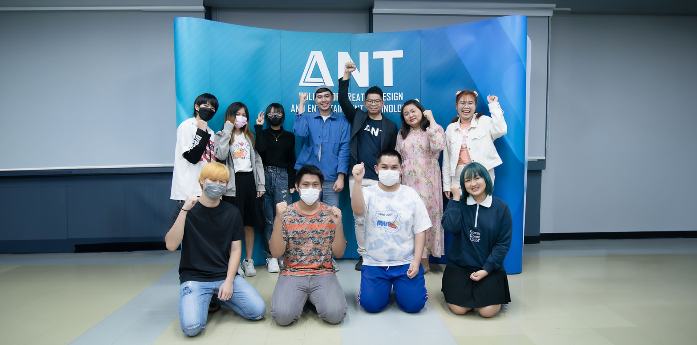ฉันมีโอกาสเข้าร่วมกิจกรรม ANT DPU Esports x FULL SENSE ซึ่งเป็นเวิร์กชอปที่น่าตื่นเต้นเกี่ยวกับอุตสาหกรรม Esports โดยได้รับเกียรติจากแขกรับเชิญพิเศษที่มีความเชี่ยวชาญในสายงานนี้ ทั้งผู้บริหาร นักแข่ง และสตรีมเมอร์จากทีม Full Sense
ในกิจกรรมนี้ ฉันได้เรียนรู้เกี่ยวกับเส้นทางการพัฒนาสู่การเป็นมืออาชีพในอุตสาหกรรม Esports ไม่ว่าจะเป็นการเตรียมตัว ความรับผิดชอบ และมุมมองเชิงธุรกิจ รวมถึงการสร้างแรงบันดาลใจให้ก้าวตามความฝันในสายงานนี้
ประสบการณ์ครั้งนี้เปิดโอกาสให้ฉันได้รับความรู้และมุมมองใหม่ ๆ ที่มีประโยชน์ต่อการพัฒนาทักษะและความเข้าใจเกี่ยวกับอุตสาหกรรม Esports ที่กำลังเติบโตอย่างรวดเร็วในปัจจุบัน
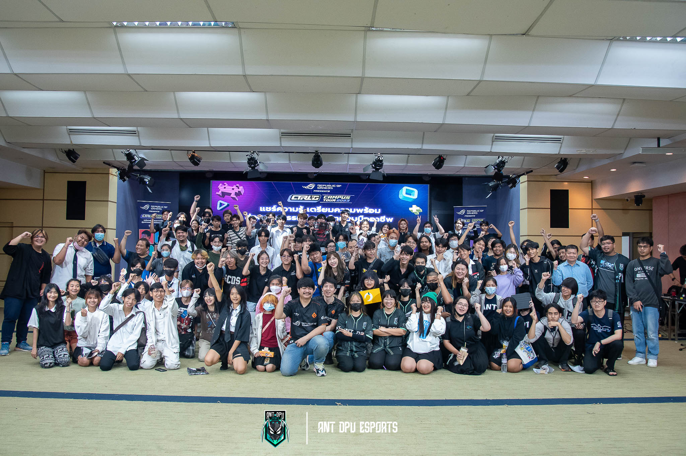ฉันมีโอกาสเข้าร่วมกิจกรรม ANT x RiFF Studio ซึ่งเป็นงานสัมมนาพูดคุยกับ RiFF Studio สตูดิโอผู้สร้างสรรค์แอนิเมชั่นไทยที่มีความยิ่งใหญ่และน่าภาคภูมิใจอย่าง “นักรบมนตรา: ตำนานแปดดวงจันทร์”
ในกิจกรรมนี้ ฉันได้รับฟังประสบการณ์ตรงจากผู้ที่อยู่เบื้องหลังการผลิตแอนิเมชั่น ไม่ว่าจะเป็นกระบวนการพัฒนาแนวคิด เทคนิคการสร้างสรรค์ รวมถึงความท้าทายต่าง ๆ ที่เกิดขึ้นระหว่างการทำงาน พร้อมทั้งยังได้รับแรงบันดาลใจในการทำงานในอุตสาหกรรมสร้างสรรค์
ประสบการณ์ครั้งนี้ช่วยให้ฉันได้เรียนรู้เพิ่มเติมเกี่ยวกับวงการแอนิเมชั่นไทย และมองเห็นถึงความสำคัญของการทำงานเป็นทีม การแก้ปัญหา และความมุ่งมั่นในการพัฒนาผลงานให้สำเร็จตามเป้าหมายที่ตั้งไว้
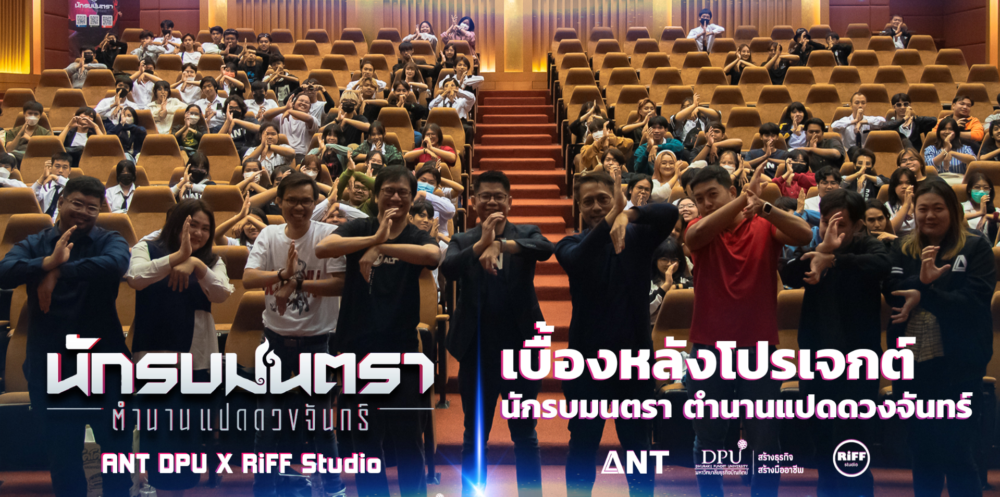ฉันมีโอกาสเข้าร่วมสัมมนา 3D Animation Workflow ที่จัดโดย The Monk Studio ซึ่งเป็นโอกาสพิเศษที่ได้เรียนรู้กระบวนการทำงานด้าน 3D Animation ครบทุกขั้นตอน ตั้งแต่ Pre-production, Production ไปจนถึง Post-production
ภายในกิจกรรม ผู้เชี่ยวชาญจาก The Monk Studio ได้ถ่ายทอดความรู้เกี่ยวกับเทคนิคการทำงานที่มีประสิทธิภาพ พร้อมทั้งแชร์ประสบการณ์การทำงานจริงในอุตสาหกรรมทั้งในประเทศไทยและต่างประเทศ ฉันได้เรียนรู้ถึงความสำคัญของการวางแผนอย่างเป็นระบบ การสื่อสารในทีม และการปรับตัวให้เข้ากับมาตรฐานระดับนานาชาติ
กิจกรรมนี้ช่วยเปิดมุมมองใหม่ ๆ และเสริมสร้างความเข้าใจในกระบวนการผลิต 3D Animation ซึ่งถือเป็นประสบการณ์ที่มีคุณค่าและสร้างแรงบันดาลใจในการพัฒนาทักษะและความสามารถของฉันในสายงานนี้ต่อไป
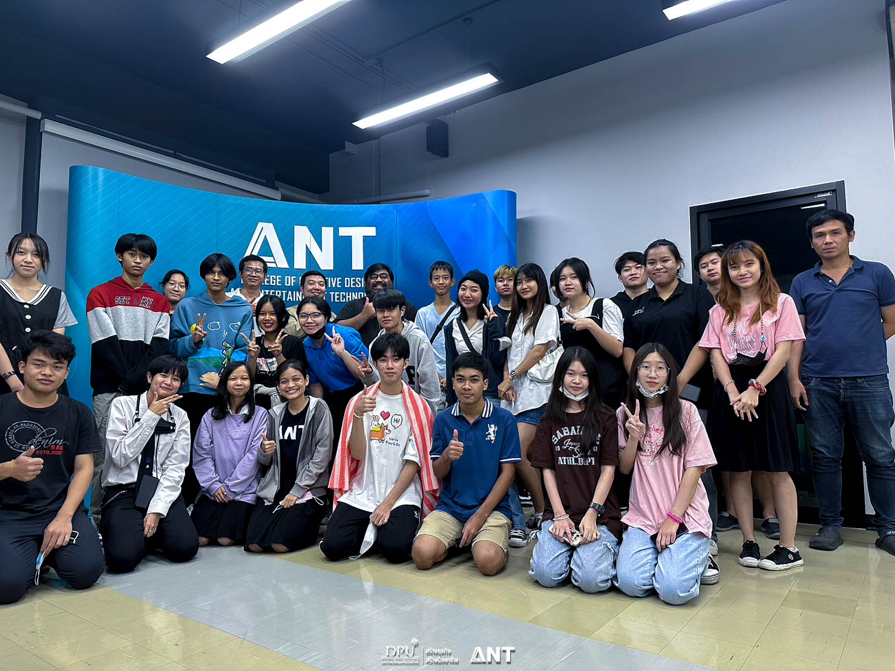ฉันมีโอกาสเข้าร่วมกิจกรรม “รู้จักบอร์ดเกมให้มากขึ้น” ซึ่งเป็นกิจกรรมที่มุ่งเน้นให้ความรู้เกี่ยวกับวงการบอร์ดเกมในหลากหลายมิติ
ในช่วงเช้า ฉันได้เข้าฟังการบรรยายที่ให้ภาพรวมเกี่ยวกับวงการบอร์ดเกม ทั้งในแง่ของอาชีพที่เกี่ยวข้อง แนวทางการพัฒนาทักษะที่จำเป็นสำหรับผู้ที่สนใจในสายงานนี้ รวมถึงความเข้าใจในระบบและกลไกต่าง ๆ ของการออกแบบบอร์ดเกม
กิจกรรมนี้ทำให้ฉันได้เรียนรู้เพิ่มเติมเกี่ยวกับกระบวนการสร้างสรรค์และการพัฒนาบอร์ดเกม ซึ่งถือเป็นประสบการณ์ที่ช่วยเสริมความเข้าใจและแรงบันดาลใจในการสร้างสรรค์ผลงานในสายงานนี้ต่อไป
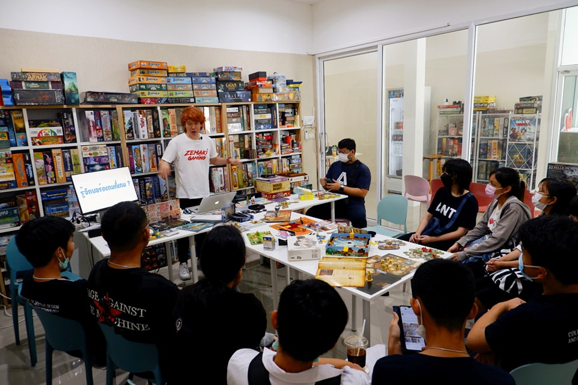ฉันมีโอกาสได้รับเลือกให้เป็นตัวแทนนักกีฬาหญิงในการแข่งขันกีฬาเปตอง ซึ่งเป็นประสบการณ์ที่เต็มไปด้วยความท้าทายและความภูมิใจ
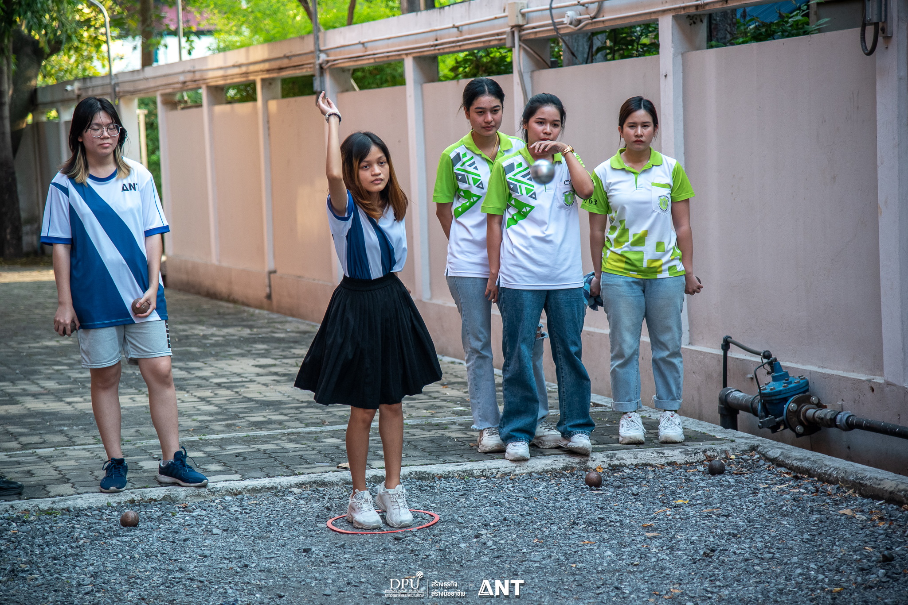ฉันมีโอกาสได้เข้าร่วม Workshop ฝึกปั้นคาแรคเตอร์สุดน่ารักรูปสิงโตด้วยดินน้ำมัน ซึ่งเป็นกิจกรรมที่ช่วยพัฒนาทักษะการออกแบบและเสริมสร้างจินตนาการของฉันได้อย่างดี การปั้นด้วยดินน้ำมันช่วยให้ฉันได้ฝึกความละเอียดอ่อน การลงรายละเอียด รวมถึงการสร้างสรรค์ผลงานที่สามารถนำไปประยุกต์ใช้ในวิชา Character Design ในอนาคต
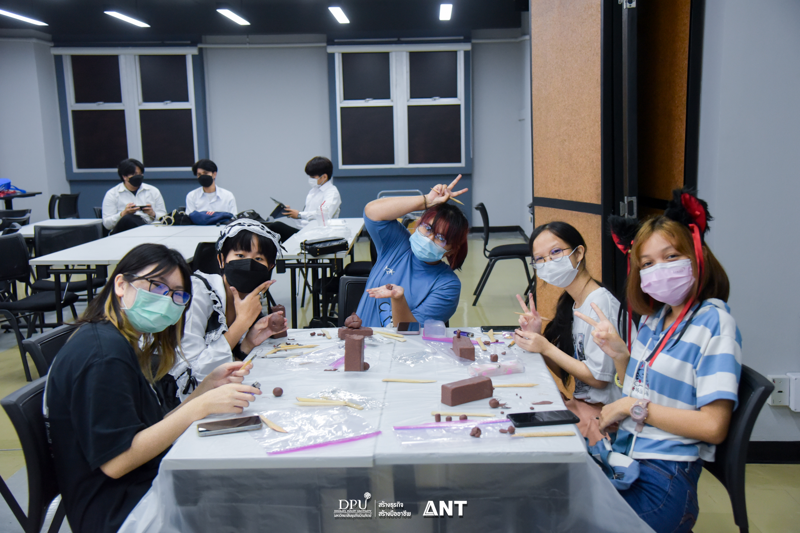ฉันได้มีโอกาสเข้าร่วมแข่งขันในกิจกรรม DPU SMART IDOL 2023 ซึ่งเป็นเวทีที่ท้าทายความสามารถในหลากหลายด้าน การแข่งขันครั้งนี้ไม่เพียงแต่เป็นการทดสอบทักษะและความคิดสร้างสรรค์ แต่ยังเป็นโอกาสที่ทำให้ฉันได้เรียนรู้การพัฒนาตัวเองในหลายมิติ ทั้งในด้านการสื่อสาร การทำงานภายใต้ความกดดัน และการพัฒนาทักษะในการคิดอย่างรวดเร็วและสร้างสรรค์
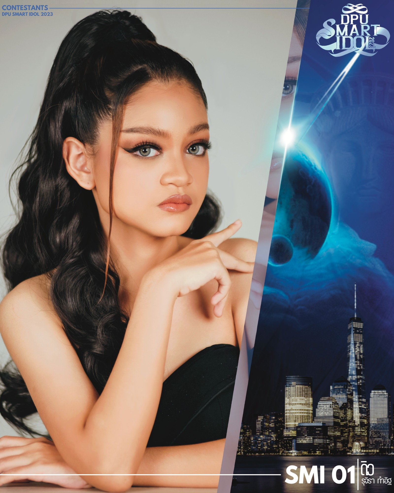ฉันได้มีโอกาสเข้าร่วมประกวดในโครงการ "เทพบุตรวารีประทีป ธิดาวารีประทีป & เทพีวารีประทีป 2565" ซึ่งเป็นการแข่งขันที่ท้าทายทั้งในด้านการแสดงออก การสื่อสาร และการสร้างความประทับใจให้แก่คณะกรรมการและผู้ชม การประกวดครั้งนี้เป็นประสบการณ์ที่ทำให้ฉันได้พัฒนาทักษะด้านความมั่นใจในตัวเอง การแสดงออก และการทำงานภายใต้ความกดดัน
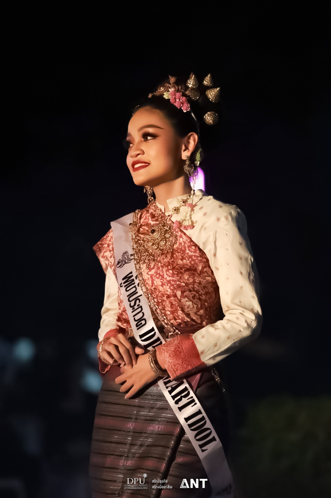